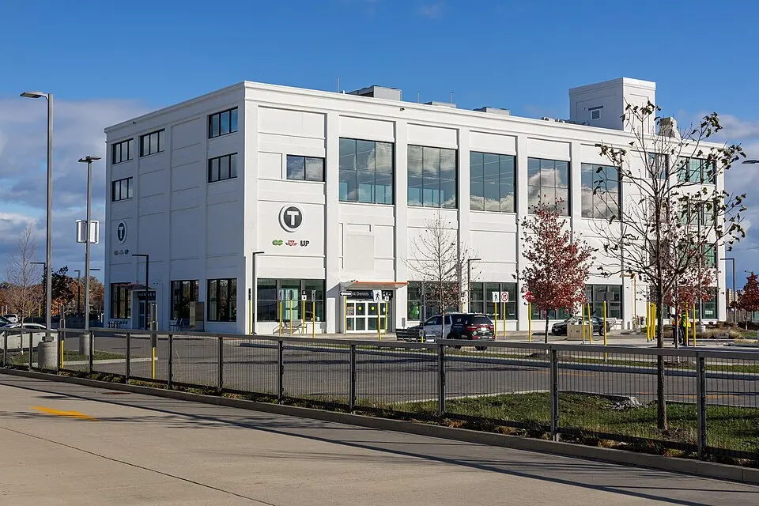

Signal
SignalStation atlas / Mount Dennis
Station history
Mount Dennis


Station history
Workers lifted the former Kodak building and moved it roughly 60 metres so they could excavate beneath its original site.
Kitchener GO trains and UP Express began serving Mount Dennis. TTC buses also started using the station before the LRT opened.
Line 5 began at the western terminal, where the former Kodak building connects the LRT with Kitchener GO trains and UP Express.